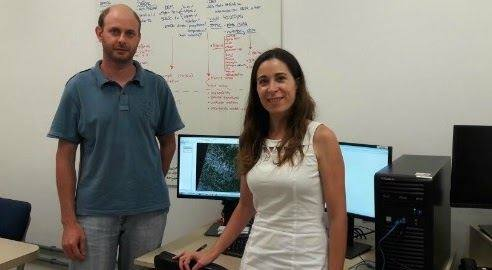
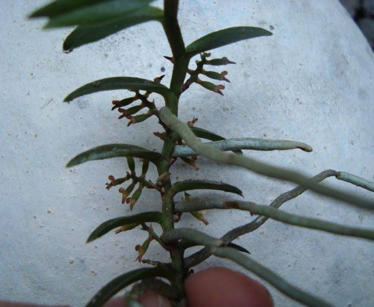
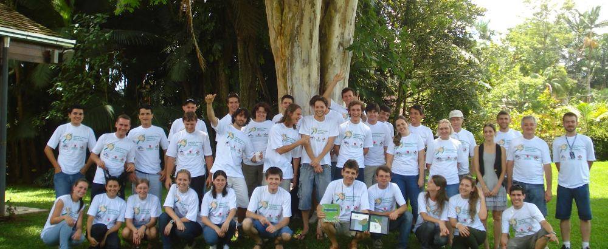
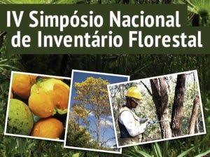

IFFSC recebe reforço de pós-doutoranda da Espanha
Sexta, 16 Dezembro 2016

Um edital internacional lançado em junho deste ano selecionou uma pós-doutoranda em Engenharia Florestal, vinda da Espanha, para atuar junto ao Inventário Florístico Florestal de Santa Catarina (IFFSC), com “Monitoramento da cobertura florestal do Estado de Santa Catarina”. A bolsista Eva Sevillano Marco está em Blumenau desde outubro de 2016. Na foto, Eva está com Adilson Luiz Nicoletti, que tem bolsa de pós-graduação no programa.
Eva foi selecionada entre 17 candidatos. O edital internacional foi a opção da equipe de pesquisa, uma vez que aqui no Brasil não se encontrou candidatos com as qualificações desejadas ao projeto, conforme explica o professor Alexander Vibrans, um dos pesquisadores. Pelo edital de seleção, a bolsa de pós-doutorado de Eva tem duração até setembro de 2019.
A atuação de Eva está focada no Monitoramento com Sensoriamento Remoto. “Nosso objetivo é coletar e analisar florestas naturais no estado de Santa Catarina”, disse a bolsista.
E ela tem o conhecimento necessário a este projeto. Entre suas áreas de estudo e atuação estão inventário florestal em alguns países da Europa, mapeamento de cobertura, silvicultura, modelos de crescimento florestal e produtividade, modelos de adequação ecológicos paramétricos, entre outros.
A adaptação
Eva conta que nunca tinha vindo ao Brasil. A entrevista para a seleção foi feita via Skype. Assim que soube da resposta, não teve muito tempo para se preparar. Precisou da ajuda de alguns pesquisadores do grupo – futuros colegas – para intermediar algumas questões burocráticas. Hoje, passados meses de vivência na cidade, ela ainda sente alguns desafios, principalmente na questão da mobilidade urbana e na adequação a alguns hábitos, como por exemplo, o horário das refeições.
Aliás, a língua também foi uma dificuldade. Assim que chegou a Blumenau, sentia-se mais a vontade de se comunicar com a equipe falando em inglês. Agora já sabe bem o português. O que tem ajudado muito neste quesito são as aulas de português para estrangeiros, ministradas pelo FURB Idiomas.
A pesquisa
Já foi duas vezes a campo e percebeu as diferenças entre as florestas daqui com as da Espanha. “Tudo é diferente. Aqui as florestas são mais densas. Lá não há muitas florestas naturais e nem tanta diversidade quanto aqui. Lá, o sistema de GPS funciona quando estamos a campo dentro das florestas. Aqui, não, justamente por conta das características diferentes. Estou descobrindo um novo mundo”, compara.
Com este monitoramento da cobertura florestal, segundo ela, será possível fazer comparativos desde a década de 70. “Com base neste mapeamento é possível implementar metodologias de preservação em várias áreas”, comentou.
Descoberta nova espécie de orquídea
Sexta, 18 Novembro 2016

O Herbário da FURB, juntamente com o Inventário Florístico Florestal da Santa Catarina (IFFSC), tem se tornado cada vez mais uma referência para estudos botânicos tanto no Estado quanto no Brasil. Prova disso é a recente descoberta feita pelo Dr. Edlley M. Pessoa. Em seus estudos de tese, ao avaliar coletas que estavam no Herbário da FURB, percebeu que uma orquídea (a da foto), era uma espécie nova.
Ao estudá-la deu o nome de Campylocentrum schlechterianum. A espécie está descrita na revista internacional Phytotaxa. Acesse aqui para ler o texto na íntegra. O nome da espécie é uma homenagem a Rudolf Schlechter, um botânico alemão, que descreveu várias espécies do gênero Campylocentrum, no começo do século XX.
A coleta é de Juliane Schmitt e colaboradores (número 1020), e está tombada no herbário FURB, e pode ser consultada no site http://furb.jbrj.gov.br/v2/consulta.php. Foi feita em São Martinho, Chicão, 526 m a.s.l., no dia 26 de janeiro de 2010.
É importante ressaltar que durante o ano de 2010, a equipe do IFFSC estudou os epífitos de Santa Catarina, realizando inúmeras coletas. Outra espécie (Vriesea rubens), já havia sido descrita com base em uma coleta na cidade de Orleans (SC). Desse levantamento foi publicado o Guia de Campo de Epífitos de Santa Catarina (Volume 6).
“Essa nova espécie mostra que mesmo em Santa Catarina, onde vários estudos botânicos já foram efetuados, novas espécies continuam sendo descobertas, indicando que as coletas continuam sendo necessárias. Além disso, mostra a importância do Herbário FURB para armazenar a biodiversidade de SC, e do IFFSC como promotor dos estudos da biodiversidade”, comentou o professor Dr. André Luís de Gasper, curador do Herbário Dr. Roberto Miguel Klein.
Resultados do IFFSC integram estudo publicado na revista Science
Sexta, 14 Outubro 2016

A equipe do Inventário Florístico Florestal de Santa Catarina (IFFSC) da Universidade Regional de Blumenau (FURB) integra um grupo de pesquisadores de 90 instituições do mundo todo, coordenado por Jingjing Liang (West Virginia University), Peter B. Reich (University of Minnesota) e Thomas W. Crowther (Yale University), que analisou dados de inventários florestais baseados em mais de 700.000 parcelas permanentes medidas durante os últimos 20 anos em 44 países. Trata-se do artigo com o titulo “A relação positiva entre biodiversidade e produtividade das florestas – um estudo global” (http://science.sciencemag.org/content/354/6309/aaf8957.full).
Conforme o prof. Alexander Christian Vibrans, coordenador da equipe do IFFSC da FURB (da qual fazem parte os professores André de Gasper, Débora Lingner, Júlio Refosco e Lauri Schorn) e co-autor da publicação na Science desta semana, as 1074 parcelas do inventário catarinense, distribuídas em todo território do Estado, constituem a maior base de dados continua dentro da América do Sul e contribuíram sobremaneira para a modelagem da relação entre biodiversidade e incremento das florestas no nosso continente. Para Vibrans, a inclusão dos dados catarinenses no estudo é o reconhecimento da qualidade dos minuciosos e inéditos levantamentos realizados em Santa Catarina desde 2007. O IFFSC já obteve destaque em publicação na revista Nature em 2015.
O grupo de pesquisadores descobriu um efeito positivo e globalmente consistente que a diversidade de espécies arbóreas nas florestas exerce sobre a sua produtividade, isto é sobre o incremento das árvores. O estudo revelou que em todas as regiões e ecossistemas terrestres da terra vale que, quanto maior o número de espécies de árvores das florestas, maior é a sua produtividade em madeira, biomassa e fixação de carbono; por outro lado, foi comprovada a regra de que a perda de biodiversidade (causada por desmatamento, por degradação ou pelas mudanças climáticas) resulta em uma diminuição significativa da produtividade florestal. Esta relação tinha sido postulada pelos modelos teóricos da ecologia por um longo período, mas até o momento não havia sido observada em larga escala num estudo global.
O que são florestas com alta diversidade? São florestas compostas por muitas espécies de árvores diferentes; o termo se aplica a florestas tanto nas regiões boreais e temperadas (onde apenas poucas espécies compõem a floresta), como nas “megadiversas” florestas tropicais e subtropicais.
Os resultados obtidos têm profundos impactos tanto para a ciência como para a sociedade. Para a ciência porque contribuem para o entendimento do funcionamento dos ecossistemas terrestres; para a sociedade porque mostram que a conservação da biodiversidade não é apenas um fim em si mesmo, mas também uma necessidade econômica: florestas com alta diversidade produzem mais madeira e biomassa, fixam mais CO2 atmosférico (o que é relevante para reverter o efeito-estufa) e fornecem maior quantidade de outros “serviços ambientais”: retenção de água da chuva e liberação continua desta água para os cursos d’água e reservatórios subterrâneos; proteção da estrutura e fertilidade dos solos; regulação climática (local, regional e global) e reservatório de recursos genéticos da fauna e flora em geral.
A equipe de pesquisadores também estimou o valor económico da biodiversidade na manutenção apenas da produtividade florestal “comerciável” em cerca de US$ 490 bilhões por ano; este valor representa mais do que o dobro do custo total estimado necessário para conservar de forma eficaz todos os ecossistemas terrestres. Isto quer dizer que os benefícios da proteção da biodiversidade são muito maiores que os custos de medidas efetivas de proteção de todas as florestas somariam (se fossem realmente tomadas).
Esta descoberta destaca a necessidade de uma reavaliação de valores monetários atribuídas à biodiversidade, além das estratégias do manejo das florestas e das prioridades de conservação. A perda de diversidade das florestas também ameaça as pessoas que vivem no meio rural e dependem diretamente dos recursos florestais: perda de produtividade florestal resulta em perda de renda e bem estar destas populações. Portanto é imprescindível tomarmos medidas urgentes para melhorar a proteção e o manejo das florestas - para enfrentar os riscos de perda de biodiversidade.
Acesse o vídeo explicativo
A pesquisa, publicada em 14 de outubro de 2016 na revista Science, marca a primeira grande conquista da equipe com o nome de “Iniciativa Global de Biodiversidade” em Florestas (GFBI), da qual o IFFSC da FURB faz parte. Fundada em 2016, a GFBI é uma cooperação internacional de investigação interdisciplinar e multi-institucional que visa melhorar a nossa compreensão dos padrões e processos que agem em larga escala nos quatro bilhões de hectares de ecossistemas florestais.
Para saber mais, visite:
Florestas Catarinenses são Monitoradas por Satélite
Quinta, 06 Outubro 2016
O governo estadual repassou à FURB recurso para dar início ao projeto “Monitoramento da cobertura florestal do Estado de Santa Catarina”. O convenio com a FURB, assinado em dezembro de 2015, prevê o uso de dados de diversos sensores remotos, montados em satélites (Landsat, Spot, CBERS) como em aeronaves (Rapid Eye, Quickbird), para acompanhar a dinâmica de retração (desmatamento) e expansão (regeneração) das diversas formações florestais no nosso Estado. Este trabalho, com duração inicial de três anos, baseado em sensoriamento remoto, vai complementar os esforços do projeto Inventário Florístico Florestal de Santa Catarina (IFFSC), em curso na FURB desde 2006 que monitora a composição, estrutura, dinâmica e o estado de conservação das florestas mediante medições em campo.
A equipe do monitoramento por satélite é composto pelos professores Alexander C. Vibrans (coordenador), Júlio Cesar Refosco e Débora Vanessa Lingner do Depto. de Engenharia Florestal da FURB, bem como de Veraldo Liesenberg da UDESC/Lages e Paolo Moser da UDESC/Ibirama (este último doutorando do Programa de Pós-Graduação em Engenharia Ambiental – PPGEA/FURB. Outros colaboradores são os engenheiros contratados Adilson Nicoletti (FURB) e Eva Sevillano Marco, bolsista de pós-doutorado, e como consultor Ronald McRoberts do Serviço Florestal dos Estados Unidos.
A partir da análise de séries temporais desde 1990 será possível desenvolver métodos para elaborar modelos que permitirão prever as mudanças futuras do uso da terra e dos estoques de biomassa e carbono sob vários cenários das mudanças climáticas. Atividades como planejamento regional, licenciamento e controle ambiental também serão apoiadas, envolvendo órgãos públicos como FATMA, Epagri, Secretarias Estaduais e as Prefeituras Municipais.
Participação no IV Simpósio Nacional de Inventário Florestal
Terça, 05 Julho 2016

Três pesquisadores da FURB foram convidados a apresentar os resultados dos estudos derivados do projeto Inventário Florístico Florestal de Santa Catarina (IFFSC), executado pela FURB, com recursos da FAPESC, desde 2007, durante o IV Simpósio Nacional de Inventário Florestal, organizado pelo Serviço Florestal Brasileiro (http://eventos.florestal.gov.br/simposioif/).
O professor Dr. André Luís de Gasper apresentou a palestra intitulada ‘Estudo de atributos relacionados à biodiversidade no IFN em Santa Catarina (IFFSC)’, onde foi abordada a diversidade de espécies encontradas durante o campo do IFFSC, um componente adicional do IFFSC. Foram apresentados ainda os trabalhos publicados, como aqueles que analisaram os estimadores de diversidade, bem como de modelagem de espécies.
O engenheiro florestal MSc. Laio Zimermann Oliveira apresentou sobre a ‘Aplicação do IFN-Brasil na análise da dinâmica da floresta: IFFSC’. Comentou que o segundo ciclo de medições do IFFSC traz novos desafios, tanto nos trabalhos de campo como na análise dos dados. E que a partir de dados de 136 unidades amostrais remedidas, o IFFSC vem desenvolvendo análises de quantificação da mudança da floresta ao longo do tempo, ou seja, o crescimento, ingressos e mortalidade das árvores.
A engenheira florestal MSc Débora Vanessa Lingner palestrou sobre ‘Alometria de espécies arbóreas da Floresta Ombrófila Densa’. Foi apresentado sobre o estudo que vem sendo realizado em uma área que está sob um sistema de manejo florestal parcial, situada no município de Guaramirim-SC. O objetivo deste estudo é desenvolver equações alométricas de volume de madeira e biomassa de espécies arbóreas da Floresta Ombrófila Densa de Santa Catarina, no âmbito do Inventário Florestal Nacional.
Ao final, a professora Dra. Lucia Sevegnani foi homenageada pelo Serviço Florestal Brasileiro, num reconhecimento de seu trabalho pela defesa da biodiversidade.
Acompanhe também nossas redes sociais para ficar por dentro das ações do projeto.
FlorestaSC
florestasc@furb.br 47 3221-6100
Página migrada de floresta.sc.gov.br.